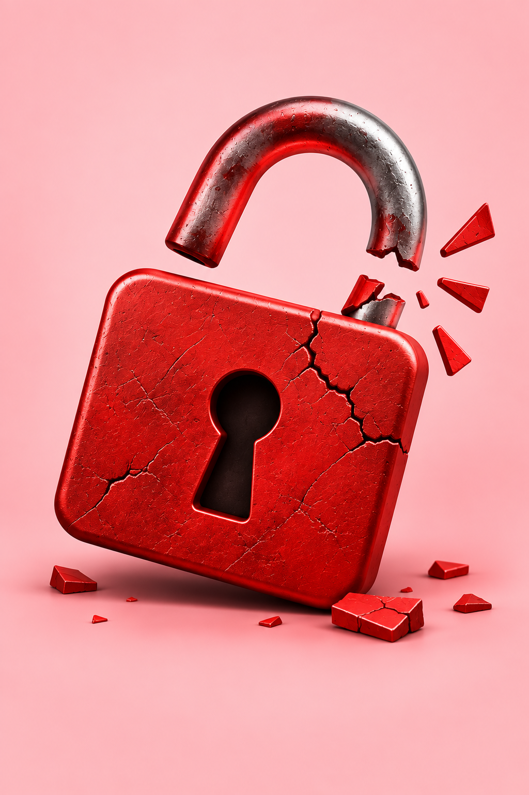
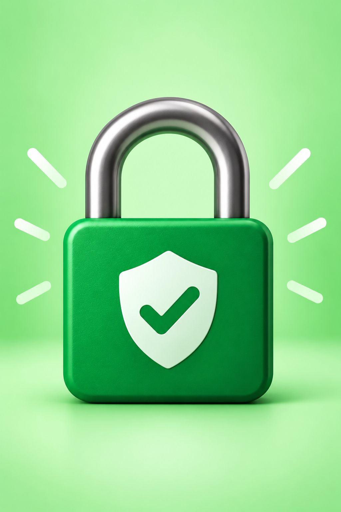
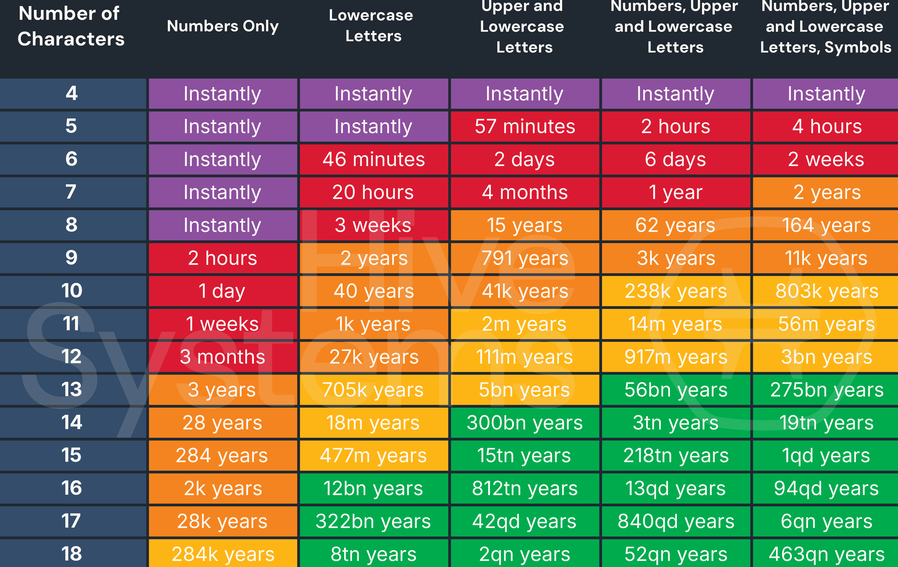

Password Security
Protect Your Accounts With Better Password Habits
Passwords are often the first layer of protection for your online accounts. A strong password strategy can make it much harder for someone to access your email, social media, financial accounts, and other personal information.
Strong Passwords 101
Longer Is Stronger
A strong password should be long, unique, and difficult for others to guess. Avoid using information that someone could easily find about you, such as your name, birthday, school, pet, or favorite sports team.
Better Password Habits
- Use a different password for every important account.
- Aim for passwords that are long and complex.
- Consider using a memorable passphrase made up of several unrelated words.
- Avoid common passwords such as 123456, password, or abcdefg.
- Don't use predictable substitutions like replacing an "o" with a "0."
- Never share your passwords with other people.

Galen123
ABCDEFG
123456
Password

G@l3n12E
Cyb3rSecur1ty101
Str0ngP@ssW0rd$0nly
How Long Does It Take to Crack a Password?
Password complexity can make all the difference.
The more characters and character types a password uses, the harder it becomes to crack. This chart shows how quickly password strength increases as you add length, numbers, uppercase and lowercase letters, and symbols. Longer, more complex passwords can turn seconds of exposure into years or even billions of years.

Password Managers
Let Your Password Manager Do the Remembering
A password manager securely stores your passwords so you don't have to remember every one. It can also generate long, unique passwords for your accounts. Instead of remembering dozens of passwords, you typically only need to remember one strong master password.
What Can a Password Manager Do?
Generate
Create strong, random passwords for new accounts.
Store
Keep your passwords securely in one place.
Fill
Automatically enter your credentials when you sign in.
Protect
Help you avoid reusing the same password across multiple websites.
Choosing a Password Manager
Look for features such as:
- Strong encryption
- Multi-factor authentication
- Password generation
- Secure synchronization across devices
- Breach or security alerts
Multi-Factor Authentication (MFA)
🔐 Don't Rely on a Password Alone
Multi-factor authentication adds another layer of protection to your account. Even if someone obtains your password, they may still be unable to access your account without the additional authentication method.
Where Should You Use MFA?
Turn it on whenever it's available, especially for accounts containing sensitive information, such as:
- Banking
- School
- Work
- Social media
- Cloud storage
◉ MFA Can Use Something You...
KNOW
A password or PIN
HAVE
A phone, security key, or authentication device
ARE
A fingerprint, face, or other biometric
Common MFA Methods
MFA adds an extra layer of security by requiring more than just a password to verify your identity. Common methods include:
- Authentication apps
- Security keys
- Text or email verification codes
- Biometrics
- Push notifications
Password Attacks
Brute Force
An attacker repeatedly tries different password combinations until they find the correct one.
Credential Stuffing
Stolen usernames and passwords from one website are tested on other websites. This is why reusing passwords can be dangerous.
Password Spraying
An attacker tries a few common passwords against many different accounts rather than repeatedly targeting one account.
Credential Theft
Attackers may steal passwords through phishing, malware, fake websites, or other scams.
Use Unique Passwords
A password stolen from one website shouldn't work anywhere else.
Use a Password Manager
Generate passwords that are difficult to guess and keep track of them securely.
Enable MFA
Add another layer of protection if your password is compromised.
Your Password Security Checklist
Before leaving this page, check your most important accounts:
- ☐ Every important account has a unique password
- ☐ My passwords are long and difficult to guess
- ☐ I use a password manager
- ☐ I have MFA enabled on important accounts
- ☐ I don't share my passwords with anyone
- ☐ I don't reuse passwords across multiple accounts
- ☐ I know how to recognize suspicious login messages